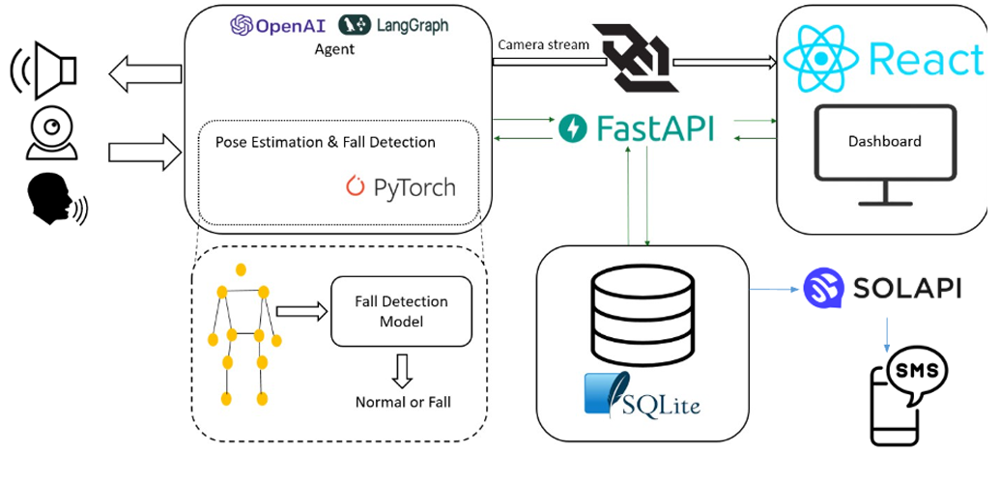
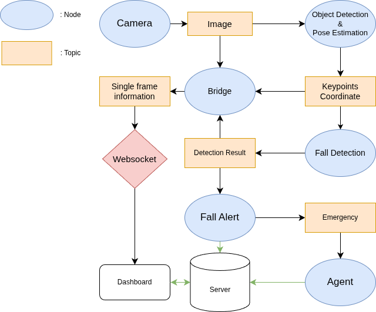

Project Overview
FOCUS (Fall detection and Observation with Connected Urgency System) was developed to address the limitations of conventional fall detection technologies, which typically focus only on post-incident analysis. With an aging population, there is increasing demand for systems capable of detecting falls in real time and initiating emergency responses without user intervention.
The system combines multiple ROS2 nodes with a backend service and web dashboard, enabling real-time monitoring, voice interaction, and automatic emergency alerts. In particular, efforts were focused on integrating fall event detection with a user-accessible monitoring interface and automated SMS notification logic.
I participated in this project as a project manager, contributing to planning, backend API implementation, and dashboard development.
Features
- Web-Based Monitoring Dashboard: A React-based interface visualizes camera feeds, node status, fall detection results, and user interactions. It communicates with ROS2 nodes via WebSocket for real-time data updates.
- Emergency SMS Notification: If a fall is detected and no user response is received, an alert message is automatically sent to a registered contact using the Solapi SMS API. The content of the message is dynamically composed by the LLM-based agent based on the situation and voice input.
- Fall Detection Model: A GAT-based classifier processes keypoints extracted by YOLOv8-pose. Edge features (distance, angle, confidence) and PointOut augmentation are used to improve robustness.
- ROS2 Modular Architecture: Individual nodes manage camera input, pose estimation, classification, speech processing, and data aggregation. Each runs independently to ensure parallel execution and fault isolation.
- LLM Voice Agent: The system includes a voice agent that processes speech inputs and provides real-time information such as weather updates or news summaries. It is implemented using LangGraph and OpenAI API.
- Alert Toggle with Redis: Users can enable or disable fall alerts through the dashboard, and the current status is stored in Redis and synchronized with all relevant services.
Technology Used
Python, ROS2, Pytorch Geometric, React, LangGraph, FastAPI, Redis
Repository
System Workflow
System workflow of FOCUS.
ROS2 Pipeline
Modular ROS2 Node Architecture